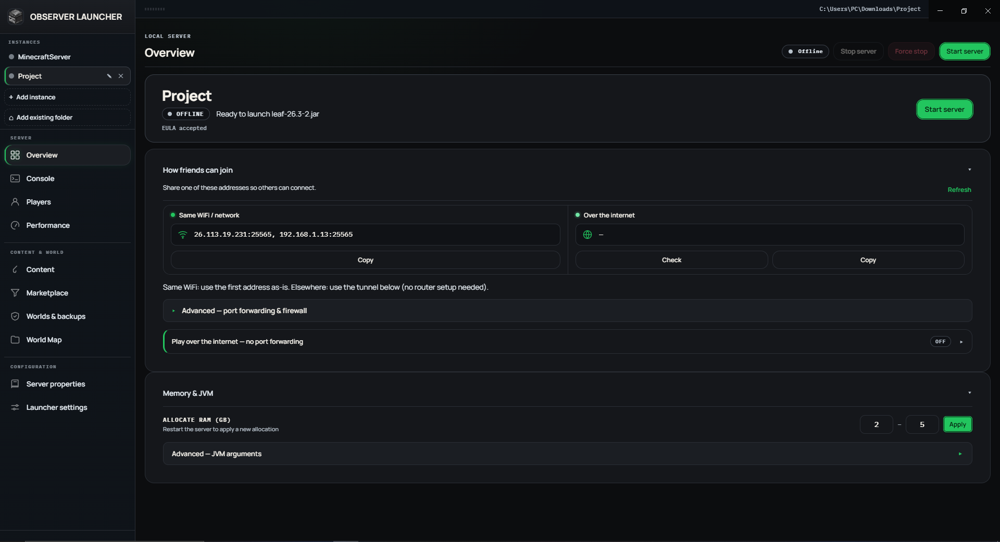
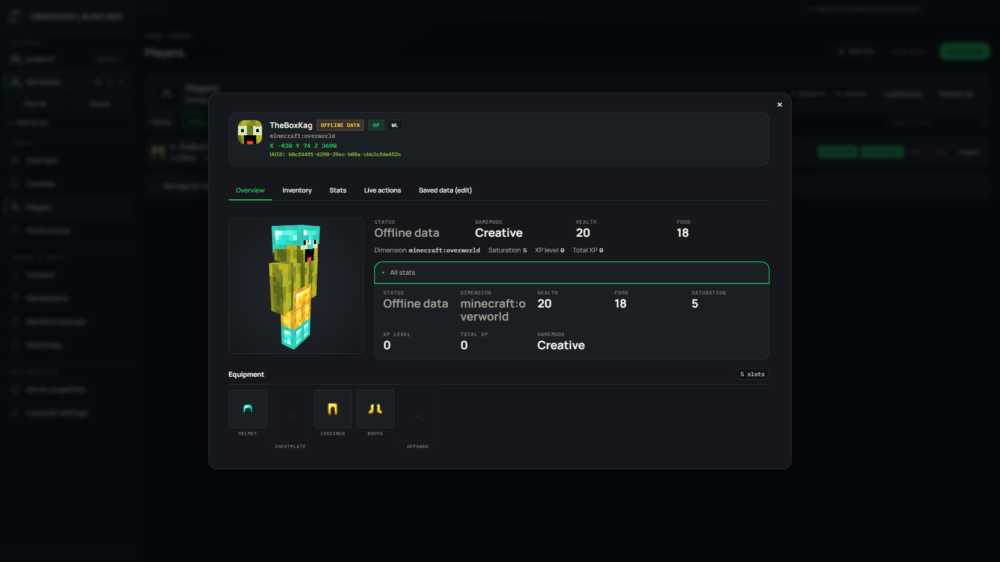
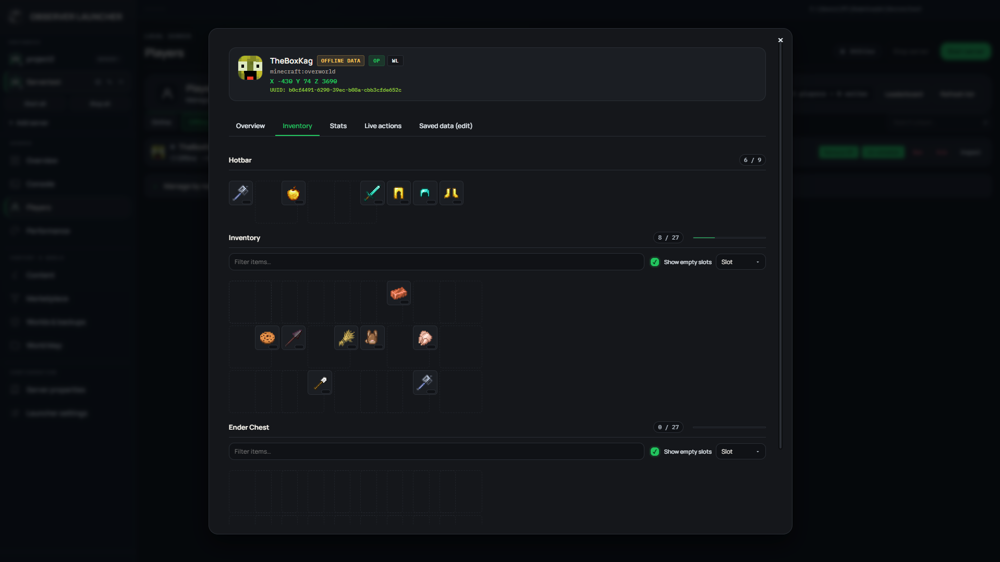
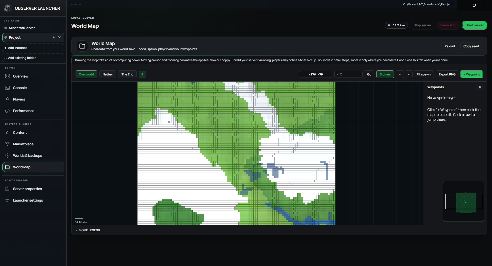
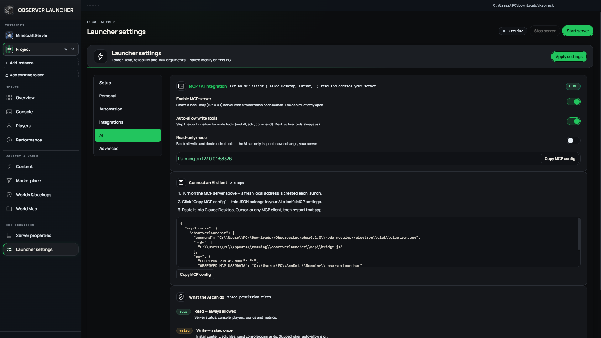

Zero Java mismatch errors
Minecraft 1.21 needs Java 21; 1.12 needs Java 8. ObserverLauncher automatically detects, downloads and isolates the exact Java runtime required for your server, keeping your computer clean.
ObserverLauncher handles Java runtimes, firewall rules, and server configurations automatically. Share a link with your friends through built-in tunnels without touching your router.

WHY OBSERVERLAUNCHER
Everything you need to play Minecraft together in one simple, beautiful desktop app.
Minecraft 1.21 needs Java 21; 1.12 needs Java 8. ObserverLauncher automatically detects, downloads and isolates the exact Java runtime required for your server, keeping your computer clean.
No more logging into your router or messing with NAT settings. ObserverLauncher comes with built-in tunneling (Playit.gg / Pinggy) that gives you a public address to share instantly.
Search and install mods and plugins directly from Modrinth, Hangar, and SpigotMC. The built-in conflict detector warns you of duplicate or incompatible mods before they crash your world.
Inspect your friends' inventories and 3D skins, view live maps of explored areas, and take automatic ZIP backups before experimenting with new mods so you never lose progress.
SEE IT IN ACTION
Take a look inside the visual interface designed to make server hosting joyful.
Real-time TPS, MSPT, CPU and RAM graphs with plain-language alerts when your server lags. One button to Start, Stop, or Restart without ever opening a terminal.
Inspect online, whitelisted, or banned players with rotatable 3D player skins. View their exact inventory, Ender chest, and health stats with real game icons (including modded items).


Rendered directly from your world save files: see discovered terrain, biomes, spawn location, and live player coordinates with custom waypoints you can manage.

ObserverLauncher features a built-in Model Context Protocol (MCP) server. Copy the ready-to-paste JSON snippet to connect Claude Desktop, ChatGPT, or Cursor in seconds.

COMPLETE TOOLKIT
Packed with powerful built-in utilities so you don't need dozens of third-party scripts.
Run and switch between multiple servers in one window. Each server has its own folder, isolated Java runtime, RCON, schedule, and network tunnel.
Automatically detect Geyser and Floodgate configuration errors and apply 1-click fixes with file backups. Opens a secondary UDP tunnel for phone and console players.
Timestamps, log level filters, and search. Player names appearing in console logs are clickable, opening their 3D skin and inventory inspector directly.
Set daily automatic start/stop times. Post notifications directly to your Discord channel on server boot, graceful stops, unexpected crashes, or player joins.
Update installed mods and plugins in batches across Modrinth and Hangar. Automatically snapshots replaced files with 1-click rollback if a new build causes instability.
Time series graphs for TPS, MSPT, and RAM persisted to disk from 15 minutes up to 30 days. Includes 1-click JVM optimization flags (Aikar's flags, G1GC tuning, ZGC).
A snapshot is automatically saved before every edit to server.properties. Compare line diffs visually and restore any previous revision in one click.
Run the entire backend with no desktop window using the `observer` CLI (JSON scriptable), or export a ready-to-run Dockerfile and compose file for VPS hosting.
ObserverLauncher exposes 76 specialized server management tools through a local MCP server. Connect Claude Desktop, ChatGPT, or Cursor to control, diagnose, and automate your server with natural language.
The AI executes `diagnose_server`, `explain_crash`, and `propose_fix` to scan console buffers, identify root causes of crashes or memory leaks, and propose actionable, structured fix plans.
Search Modrinth, Hangar, SpigotMC, and CurseForge through conversational prompts. Tools like `plan_modpack` and `assemble_modpack` resolve dependencies and catch conflicts before installation.
Ask your AI: "Check for mod updates". It scans project registries with `check_updates`, applies batch updates via `update_content`, and can execute `rollback_content_update` if needed.
Strict separation of `read` (free), `write` (UI confirmation), and `destroy` (always prompt). IPv4 addresses and emails are scrubbed before sending logs to AI models, and all actions are recorded in an audit log.
{
"mcpServers": {
"observerlauncher": {
"command": "node",
"args": ["C:/Users/.../ObserverLauncher/src/mcp/bridge.js"],
"env": { "OBSERVER_MCP_TOKEN": "your-session-token" }
}
}
}COMPATIBILITY
Version lists load live from official project repositories so new Minecraft releases are available instantly.
High performance server with extensive plugin support for community play.
Lightweight and modular modding engine, fast updates for latest Minecraft versions.
Massive mod ecosystems supporting rich modpacks with complex game mechanics.
Drop-in replacement for Paper with enhanced gameplay configurability and performance.
High-performance fork of Paper focused on optimal server efficiency, vanilla bug fixes, and stability.
Experimental Paper fork featuring regionized multithreading for high concurrent player counts.
High-speed proxy networking and classic craftbukkit plugin foundations.
The original, unmodded Minecraft server directly from Mojang Studios.
HONEST & TRANSPARENT
Everything you need to know about hosting locally with ObserverLauncher.
Your worlds, configs, and player data stay directly on your PC.
No registration, no emails, no passwords, and no cloud lock-in.
No background tracking, analytics, or third-party ads.
Closing the application leaves no background daemon processes.
No, ObserverLauncher is free and open-source under the Apache-2.0 license. The server runs directly on your computer hardware, meaning there are no subscriptions or monthly hosting bills.
Yes! ObserverLauncher provides 1-click Bedrock crossplay support using GeyserMC and Floodgate. Mobile, console, and PC players can join and play together in the same survival world seamlessly.
In the Network tab, simply enable the built-in tunnel (Playit.gg or Pinggy). ObserverLauncher generates a public server address that you can send to your friends. They paste it into Minecraft Multiplayer and connect immediately.
Not at all. When you press Stop or close ObserverLauncher, all server processes terminate cleanly. No background daemons or services stay running on your computer.
DOWNLOAD FREE
Choose your operating system below. Automatic updates are built in.
Windows installer note: The binary is not commercially code-signed yet. If Windows SmartScreen shows a prompt, click "More info" then "Run anyway".
git clone https://github.com/Kag4286/ObserverLauncher
npm install && npm start